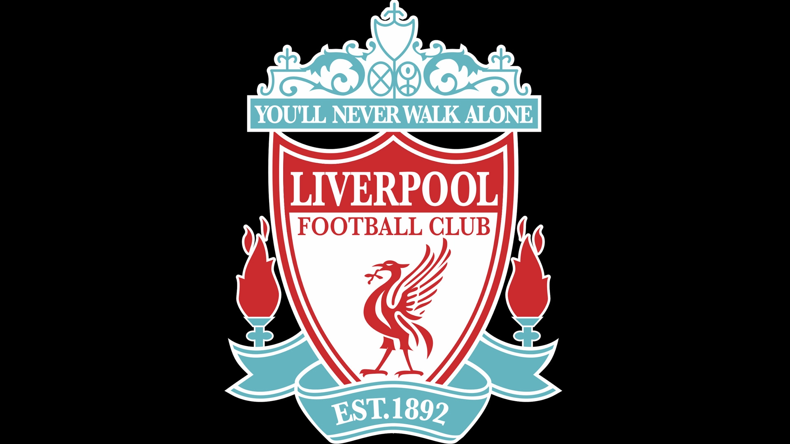

contenido principal
aqui se alojara tu contenido principal

El Liverpool Football Club (pronunciación en inglés: /ˈlɪvərpul ˈfʊtbɔl klʌb/) es un club de fútbol profesional inglés con sede en Liverpool, Inglaterra, que disputa la Premier League, máxima competición futbolística en dicho país. Fue oficialmente registrado como club de fútbol por John Houlding el 6 de junio de 1892, aunque originalmente fue nombrado «Everton F. C. and Athletic Grounds Ltd.» ante la Asociación Inglesa de Fútbol. En 1893 se unió a la Football League. Si bien ganó su primer título de liga en 1901, fue durante la década de 1970 y 1980 cuando la institución, bajo la conducción técnica primero de Bill Shankly y posteriormente de Bob Paisley obtuvo siete títulos internacionales y once campeonatos de liga. Fue miembro fundador de la «Premier League» en 1992 y del grupo G-14. Sus colores distintivos históricamente son el rojo —por lo cual reciben el apelativo de «The Reds»—, y en menor medida el blanco. Disputa sus partidos como local en el Estadio de Anfield desde su formación, que posee una capacidad de 50 074 espectadores.